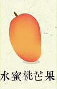


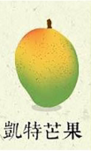
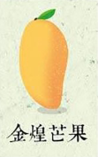
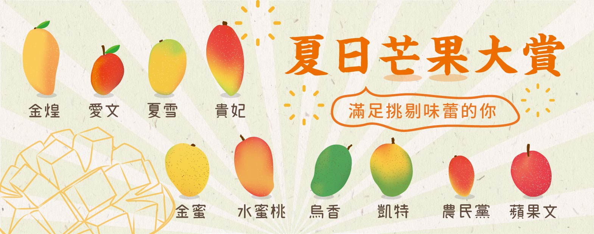
芒果品種百百種，愛文、貴妃、金煌、夏雪芒果...，住在寶島台灣，最幸福的事就是夏天有好多芒果可以吃！但在芒芒果海中，要挑選哪一種芒果呢～看完這篇帶你一次搞懂每個芒果特色！
| 品種 |
|
 |
|
|
|
 |
 |
|---|---|---|---|---|---|---|---|
| 口感 | 細緻肉厚 | 細緻多汁 | Q彈紮實 | 綿密細緻 | 細緻肉厚 | Q彈 | Q彈 |
| 甜度 | 高 | 清爽甜 | 高 | 超高 | 高 | 甜中帶酸 | 甜中帶酸 |
| 特色 | 濃郁香氣 | 水蜜桃香 | 龍眼口味 | 迷人果香 | 濃郁芒果香 | 淡雅香氣 | 清爽香氣 |
愛文芒果是台灣光復後從美國佛羅里達州引進的品種，因為適合台灣的氣候，且濃郁的香氣及滑順的口感最受台灣人喜愛，成為台灣最廣泛種植的品種。果型飽滿、顏色紅艷、甜而不膩，口感Q彈、果香濃郁，全方位的優點讓愛文深受大家喜愛，許多人吃過一次就直接愛上！
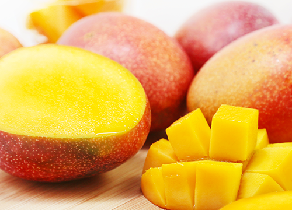
點這買愛文芒果水蜜桃芒果又稱紅龍芒果，當熟成時，蒂頭處會散發一股水蜜桃的香氣，因而得名。水蜜桃芒果的果形與愛文相比略長，美麗的果皮黃紅交融，散發一股迷人的水蜜桃香氣，十分討喜！其果肉細緻多汁，儘管甜度不是最高，滋味卻相當清爽柔和，全台種植的量不多，是非常稀少的品種！
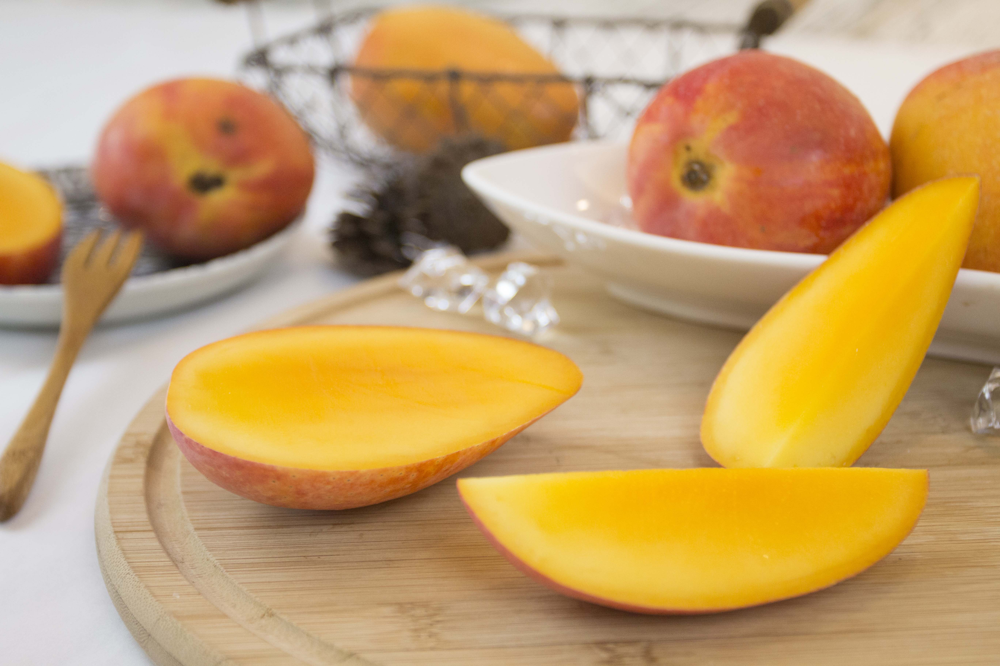
點這買水蜜桃芒果烏香芒果、又稱黑香，早在日治時期引入台灣，但不適應台灣環境氣候，目前仍只有少量種植。烏香芒果果實為深綠色，在成熟後果實軟化，但不會轉色。甜度高、口感Ｑ彈，最大的特色就是龍眼香氣，目前在台產量稀少，是限定的美味，想品嘗體驗的農粉趕緊試試看！
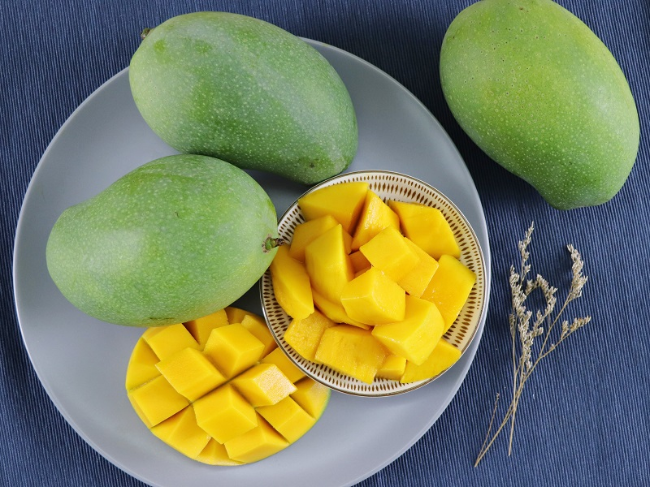
點這買烏香芒果貴妃芒果又名紅金龍，是由台南南化果樹產銷班黃班長改良的新品種芒果，甜度最高可達20度，且果實重量可達到一公斤，細緻綿密的口感與特有的清香是貴妃芒果最大的特色。果粒大、果核小，果肉紮實細密，口感香甜多汁，連紅綠相間的果皮也別具特色，聲名遠播到日本，許多日本人遠道而來就是為了親自品嘗貴妃芒果的美味，但我們在台灣就能享受到，誠心推薦給愛吃甜的農粉們。
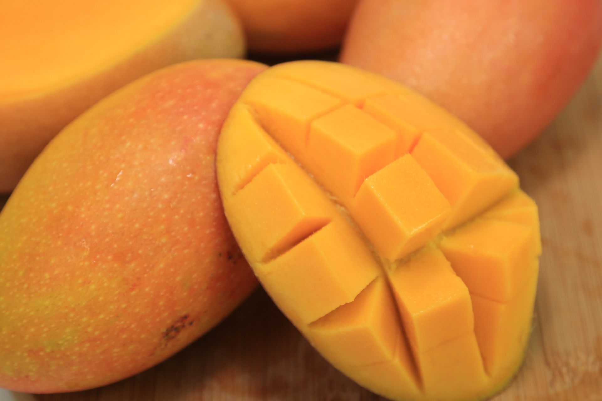
點這買貴妃芒果高雄農改場在1986年，培育出「高雄3號 夏雪芒果」，集各家芒果的優點於一身，以土芒果為母本，果型中等，散發土芒果香氣，同時又有金煌芒果甜度與愛文口感，被世人譽為「芒果界的LV」！
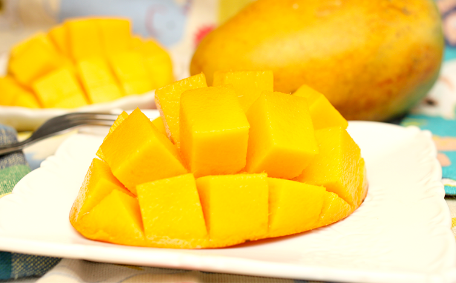
點這買夏雪芒果蜜雪芒果(高雄四號)擁有橘黃帶點粉的色澤，蒂頭處會有淡淡清果香，品嘗起來甜而不膩、果肉軟滑飽滿，又被稱為"芒果界的愛馬仕"。蜜雪芒果是夏雪芒果和愛文芒果的混種，外觀像愛文有帶點橘黃，吃起來像夏雪微微帶點少許自然纖維，整體吃起來紮實綿密、甜度適中，喜歡嘗試不同品種芒果的你更是不能錯過喔！
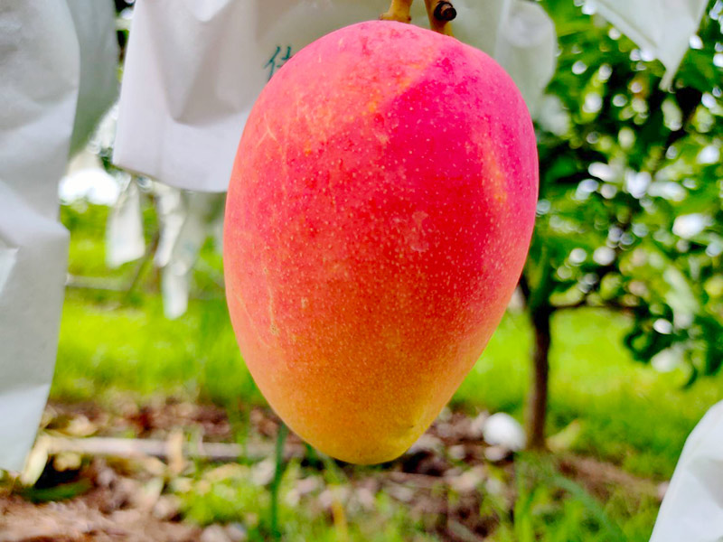
點這買蜜雪芒果同樣是在台灣光復後從美國佛羅里達州引進的品種凱特，屬於晚熟的品種，產期可延至晚秋農曆九月，又稱九月檨，果實大而圓，果肉橙黃、肉質較扎實，甜中帶酸，喜歡酸甜滋味的朋友們就選凱特吧！
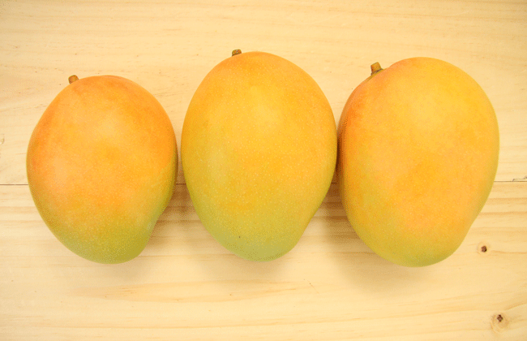
1966年時，台灣的農民黃金煌先生花了八年時間，以凱特為父本、印度的懷特為母本雜交，選育出的芒果品種「金煌芒果」，有著凱特的碩大體型，以及懷特的細緻口感，且抗病性高，連總統蔣經國吃完後都讚不絕口，且金黃色的果皮煞是好看，果型碩大如木瓜，果肉不只細緻、纖維稀少，特別的口感也非常不錯。
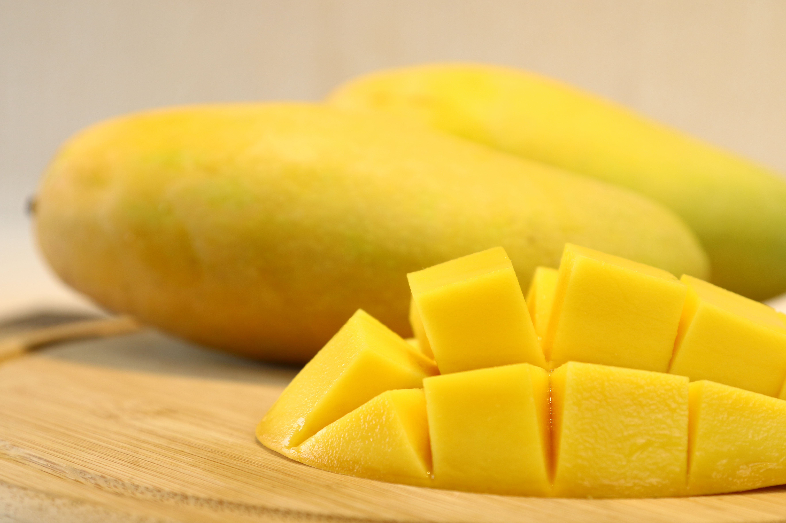
更多產地直送的水果